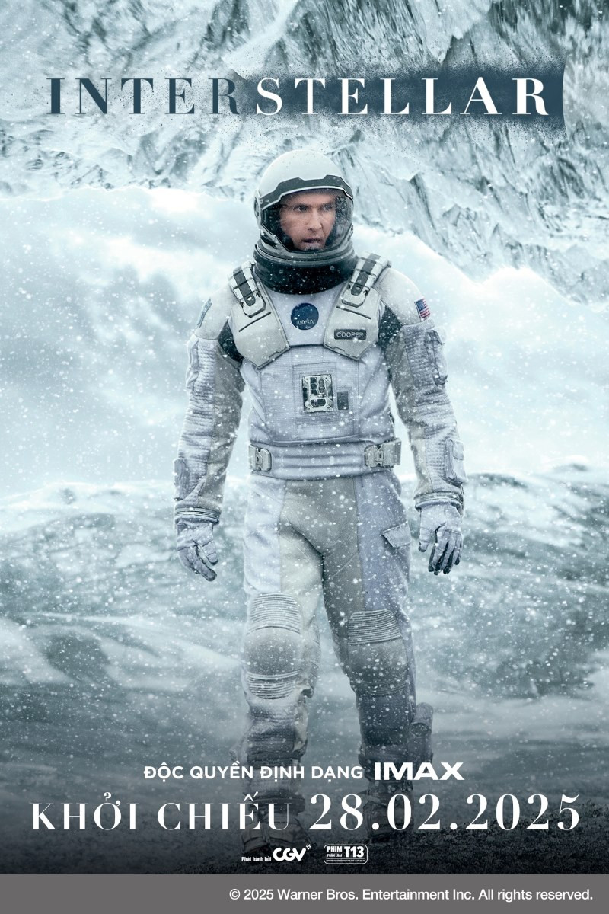

Đạo diễn: Christopher Nolan
Diễn viên: Matthew McConaughey, Anne Hathaway, Jessica Chastain
Thể loại: Khoa Học Viễn Tưởng
Khởi chiếu: 28/02/2025
Thời lượng: 169 phút
Ngôn ngữ: Tiếng Anh - Phụ đề Tiếng Việt
Rated: T13 - PHIM ĐƯỢC PHỔ BIẾN ĐẾN NGƯỜI XEM TỪ ĐỦ 13 TUỔI TRỞ LÊN (13+)
Một đoàn thám hiểm vũ trụ sử dụng một hố đen mới được khám phá để du hành xuyên không gian đến những vì sao xa xôi và tìm kiếm hy vọng cho loài người. “Interstellar” là biên niên ký về cuộc phiêu lưu vĩ đại của một nhóm các nhà thám hiểm sử dụng khám phá mới về lỗ đen vũ trụ để vượt qua các giới hạn thông thường trong du hành không gian, chinh phục khoảng không mênh mông trên một chuyến hành trình xuyên dải ngân hà.. Cùng trải nghiệm một INTERSTELLAR hoàn toàn khác biệt. Siêu phẩm của đạo diễn Christopher Nolan sẽ trở lại ĐỘC QUYỀN VỚI ĐỊNH DẠNG IMAX từ ngày 28.02.2025